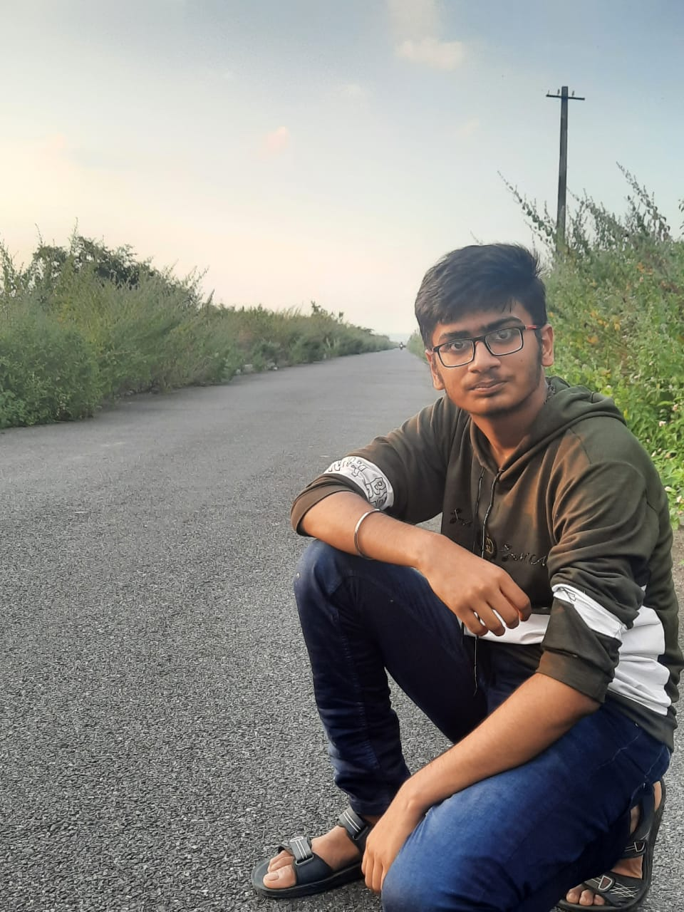
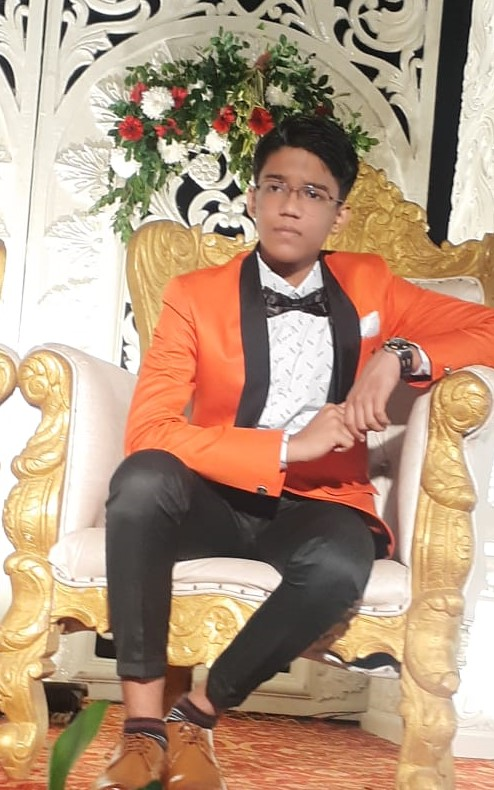
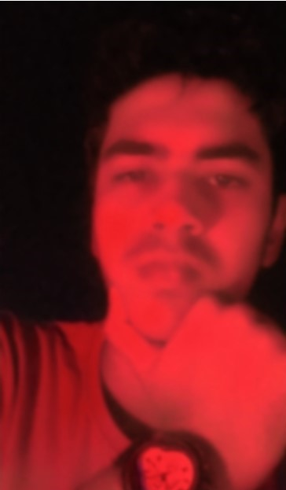

We are pleased to inform that we,The TriFriends Group,are delighted to provide you this website of our book.It is the tremndous work of four school friends(earlier three)which has come to an end which has bought fruitful results. it was the day of 19 AUG 2021,that one student Manas Kumar,raised his hand in online class and accepted the challenged give by his teacher Baidyanath Grahacharya Sir ,that was to make a whole book through HTML.He proposed that by the end of this academic session 2021-2022,we three,Lakshya ,Piyush and Manas,would make this challange and provide it to him(B.G.Sir).Hovever it was later also accompanied by Amrit whose absence would have created trouble at that time.
Perhaps it took about 6 months to complete this project ans it finally got completed on 7 Jan 2022.
About the creators...
All the creatos of this project were students of 8C,in the year 2021-22...
Manas kumar

PORTFOLIO→CLICK HERE
His contribution is that he leaded the group.He leaded at all the steps in creating this website.Moreover,his main contribution was in designing outlook and creating base structure.
To know more,you can merely visit his portfolio.
Lakshya Arya

PORTFOLIO→CLICK HERE
He played a dynamic role in designing the outlook of this website.
To know more,you can merely visit his portfolio.
Piyush Kumar

PORTFOLIO→CLICK HERE
His role in creating the base structure of the code is apprecable.
To know more,you can merely visit his portfolio.
Amrit Raj

PORTFOLIO→CLICK HERE
Altough he joined our group little later,his absence indeed would have been troublesome. His main cintribution was in making the website responsive.
Altough all the students worked in different parts, there were as a unit. And everyone’s work was equally important. Absence of anyone,would have led the mission to be aborted. We thanks all for their support and wish them bright future ahead.